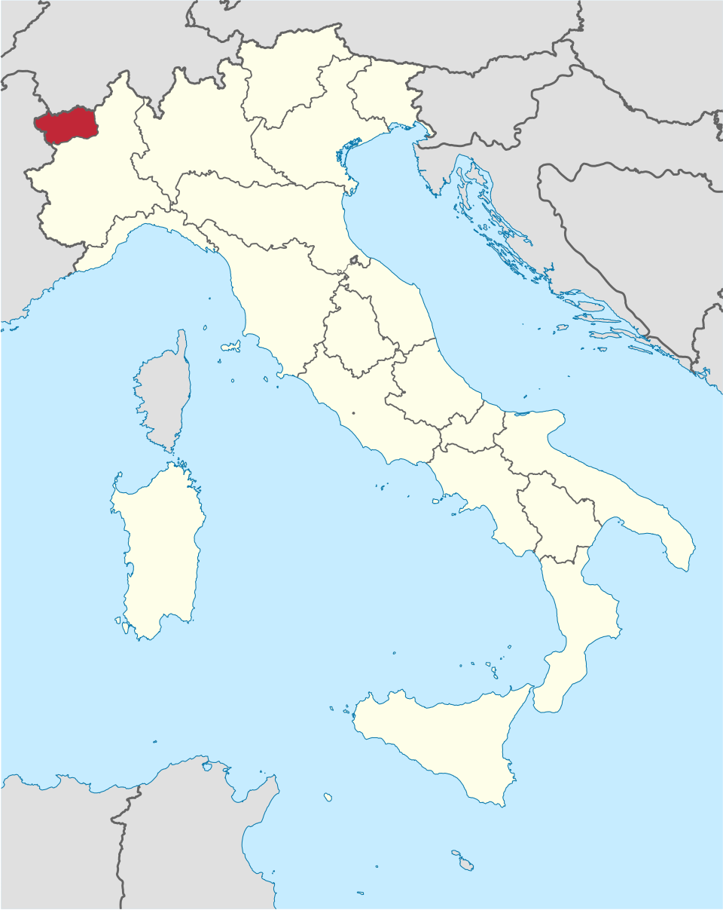
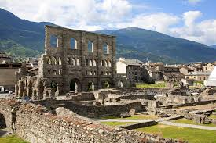
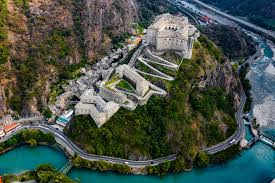
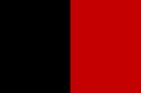
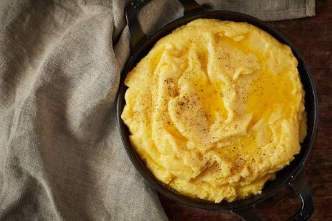
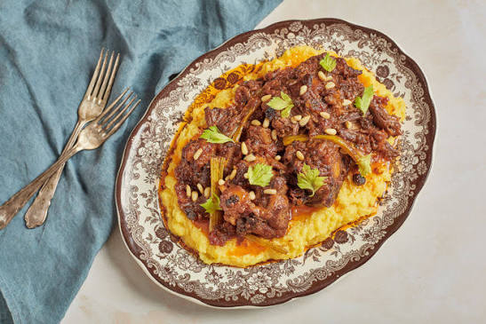
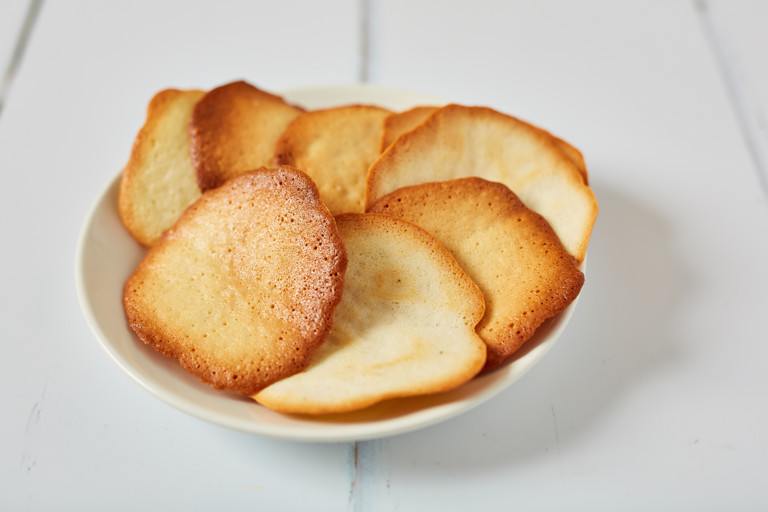
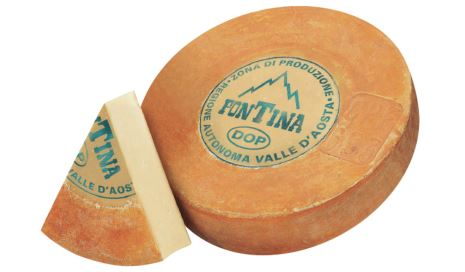

Northwestern Italy, in the Alps bordering France and Switzerland
Aosta
Mountainous Alpine region featuring Mont Blanc, glaciers, and valleys
Italian and French (with regional Franco-Provençal influences)
Fontina cheese, carbonade, polenta, and mountain cuisine
Alpine landscapes, castles, skiing, and bilingual culture

Situated in the northwest corner of Italy, the Aosta Valley is where the Dora Baltea, one of the tributaries of the river Po, has its source in the glaciers of Mont Blanc. This great valley—one of the largest on the southern side of the Alps—leads to the two famous Saint Bernard passes across the great mountain.
Fun Fact: Being the smallest region in Italy, the Aosta Valley is not divided into provinces. Instead, it is divided into 74 municipalities.
Capital City: Aosta
The region is mainly an Alpine land occupied by mountains. and divided by the east-west flow of the Dora Baltea River, which rises at Monte Bianco (4,808 m or 15,774 feet). Monte Bianco (or Mont Blanc) is Italy's tallest mountain and straddles the French border. Two other high mountains along the northern border are Monte Cervino (or the Matterhorn, 4,478 m or 14,692 feet) and Monte Rosa (4,634 m or 15,203 feet).
The Aosta Valley region is known for its local microclimates which are very different, even between valleys or mountainsides. In general the valleys have a continental climate: in winter temperatures drop below freezing; in summer temperatures rise over 30°C (86°F), with very little wind. At higher altitudes there is an alpine climate, where summers are short, and winters are long and cold, with temperatures dropping below -20°C (-4°F). Rainfall in region is scarce, especially compared to other regions of the Alps, but what there is is generally evenly distributed throughout the year. The deepest valleys are often very arid.
Inhabited since the 4th century BC by the Salassi people, the territory of the Aosta Valley was conquered in 25 BC by the Romans, who founded Augusta Prætoria Salassorum, current-day Aosta, where the imposing Arch of Augustus still stands in memory of their victory.
The roads built by the Romans, such as Via Francigena, which starts here, provided passageway for the Goths, Franks and Lombards until the arrival of Humbert I, Count of Savoy, who, in 1302, turned it into a duchy by granting the population wide autonomy.
After joining the Kingdom of Sardinia in 1847, the Aosta Valley was granted the special statute of the Italian Republic in 1948.
As of 2026, the total population is 122,554 people.
The region covers an area of 3,261 km², with a population density of about 37 people per km² (2026).
Surrounded by stunning mountain peaks, it is celebrated for its incredibly well-preserved ancient Roman ruins, its rich alpine culture, and its prime location as a gateway to world-class skiing and hiking.
Population: 33,127 people
Globally renowned for the Royal Castle of Sarre (Castello Reale di Sarre). Originally a medieval fortress, it was transformed into a lavish hunting lodge by King Victor Emmanuel II and is famous for its unique Great Hall adorned with thousands of animal horns.
Population: 4,826 people
It is primarily famous for its relaxing thermal mineral springs, the renowned Casino de la Vallée (one of Europe's largest), and its exceptionally mild, sunny microclimate.
Population: 4,432 people
It is best known as the historic gateway to the Matterhorn, its rich medieval castle heritage, and as the ancestral home of the founder of the BIC pen empire.
Population: 4,299 people
The Aosta Valley is known for a mix of ancient Roman history and impressive mountain fortifications.

Built during the Roman period, it’s one of the best-preserved archaeological sites in the region, showing how important the city of Aosta was in Roman times.

This massive 19th-century fortress sits dramatically in a narrow valley and was rebuilt by the House of Savoy. Today it’s a major cultural site with museums and exhibitions, and it dominates the landscape as you enter the region.

The flag is composed of a vertical bicolour of black and red.
The current flag was adopted on March 16th, 2006.
The flag was created in 1942 from an idea by canon Joseph Bréan, who proposed its use in an anti-fascist brochure from 1942 entitled "The Great Aosta Valley".
Joseph Bréan drew the colours of the 16th-century coat of arms of the Duchy of Aosta, a silver lion on a black shield with a red tongue, and a two-colour flag.
Shortly afterwards, the resistance movements in the Aosta Valley adopted these colours for themselves, creating a flag halved vertically ("per pale").
However, after the liberation, this flag was never formally ratified, both because of widespread fear that it might fuel desires for independence and because of its similarity to some banners of the anarchist movement.
The flag was in unofficial use from 1947 until it was officially adopted under the Regional Law of 2006.
In the Aosta Valley, people speak both Italian and French due to its complex historical influences.
The region was Romanised in 25 B.C., and Latin evolved locally. By the Middle Ages, its proximity to the Bourgogne region led to the development of Franco-Provençal dialects still spoken today.
From the 1200s, French gradually replaced Latin in writing, and in 1561 it became the official language of public administration under the Savoy rule. French education spread widely, resulting in very low illiteracy by the 19th century.
After Italy’s unification in 1860, Italian influence increased, especially during Fascism when French use was banned and place names were Italianised. In 1948, autonomy restored equal status to Italian and French.
Additionally, some communities in the Lys Valley still speak Germanic Walser dialects (Titsch and Toitschu).
The Aosta Valley is famous for hearty, rustic Alpine cuisine designed to ward off the cold. Because of its harsh mountain climate and proximity to France and Switzerland, the region relies on rich dairy, cured meats, and warming stews rather than traditional Mediterranean ingredients.

An indulgent, traditional northern Italian dish originating from the alpine Aosta Valley. It is made by cooking cornmeal in water, then vigorously stirring in generous amounts of butter and regional melting cheeses until rich, smooth, and spoonable.
Meaning of the dish: "Concia" translates to "dressed" or "prepared".

Carbonade valdostana is a traditional beef stew from the Aosta Valley, prepared with red wine, onions, and sometimes flavored with regional spices or juniper. The dish is a hallmark of alpine mountain cooking, celebrated for its hearty, slow-cooked flavor and ties to the valley’s cold climate and cattle-raising heritage.

Tegole valdostane are traditional almond wafer cookies from the Aosta Valley. Named after “tegole,” meaning roof tiles in Italian, these thin, crisp biscuits are a hallmark of local pastry culture and often enjoyed with coffee, tea, or dessert wines.

Fontina is a semi-soft cow’s milk cheese from the Aosta Valley in northern Italy. It has a smooth, creamy texture and a mild, nutty, slightly earthy flavor that becomes stronger as it ages. Because it melts easily and evenly, it’s commonly used in traditional dishes like polenta, fondues, and baked mountain recipes.
The Aosta Valley is known for its impressive medieval castles, which are scattered throughout its Alpine valleys and reflect its historical importance as a strategic border region. These fortresses, along with ancient Roman remains in the city of Aosta, highlight the region’s rich and layered history. Its culture is also shaped by strong mountain traditions influenced by both Italian and French heritage.
Patrick Fiori is a French-Armenian singer with strong cultural ties to the Franco-Alpine region, including the Aosta Valley through his family background. Although he is not from the region, he became famous in the 1990s through the musical Notre-Dame de Paris and later built a successful solo career in French pop and chanson. He is best known for emotional ballads and powerful vocal performances, making him one of the most recognized voices in French-language music.
Want to learn more about the Aosta Valley? Watch this video to explore its landscapes, history, culture, and traditions.
Watch the video →